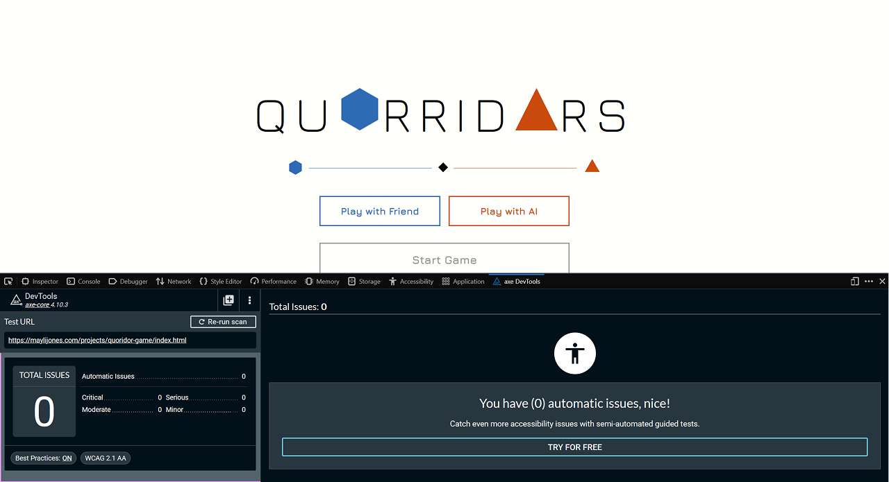

Quorridors
A playable Quoridor with an AI opponent
Built in JavaScript, with pathfinding and a minimax AI.
Play it
Choose one of three difficulty levels and take on the AI.
How to play
- Two players, a 9x9 board. Each pawn starts in the centre square of its own edge.
- Goal: be the first to reach the opposite side of the board.
- On your turn, either move your pawn one square (forwards, backwards, left or right) or place a wall. Pawns can't move through walls.
- Each wall spans two squares, and you get 10 walls. Both players must always have at least one route to their goal.
- If the pawns meet face to face, you can jump over your opponent. If there's a wall directly behind them, step diagonally instead.
Under the hood
Quorridors is written in JavaScript, HTML and CSS. The rules, the pathfinding and the AI all run in the browser.
Game state and rules
The game keeps one state object: pawn positions, placed walls, walls remaining and whose turn it is. Every move, from a person or the AI, goes through the same validation, so the rules for movement and wall placement are enforced in a single place.
Pathfinding
Breadth-first search finds the shortest route across the grid, with walls treated as blocked edges. It's used twice: to check that a proposed wall still leaves both players a route to their goal, which is what rejects illegal walls, and to measure each player's shortest distance. Because every step costs the same, the first time the search reaches a goal square is guaranteed to be the shortest path.
The AI
The AI uses minimax: it looks ahead through possible moves, assuming each side picks the move that is best for them, and scores the positions it reaches. Alpha-beta pruning skips branches that cannot change the decision, so it can search further in the same time. Each position is scored by comparing the two players' shortest path lengths: the shorter your route is compared with your opponent's, the better the position. The game offers three difficulty tiers: Easy, Hard and Impossible.
Tuning
Early versions were wall-happy, placing walls at almost every turn instead of racing to the goal. Playtesting exposed it, and we refined the scoring until the AI balanced blocking with advancing.
Accessibility
Accessibility was part of the build from the start. We used Firefox Developer Tools to inspect the accessibility tree and check the game for problems, and fixed what it found. The two players are told apart by shape (a hexagon and a triangle) as well as colour, so the game does not rely on colour alone.
